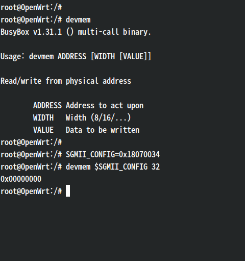

DW02-412H 작업기: eth1 살리기
DW02-412H 작업기 시리즈
- OpenWrt 포팅 따라하기
- ath79로 재포팅
- eth1 살리기
- qca8k로 넘어가기
※ 이 글은 2020년 7월에 작업했던 내용을 당시의 기록과 기억에 기반해 정리한 것이고, 포스팅 내의 모든 이미지는 글을 작성하는 시점에서 새로 생성하였습니다.
포팅 후 남은 찜찜함
OpenWrt 포팅 작업은 끝났고 웬만한 기능은 다 살린 것 같지만… 찜찜함이 하나 남습니다.
저 port 6은 대체 뭘까요? 왜 10Mbps로 연결되어 있다고 하죠? (물론 이더넷 케이블은 하나도 꽂지 않은 상태입니다)
DW02의 내부 네트워크 토폴로지를 복습해봅시다. (VLAN이나 브리지는 잠시 무시합니다)
QCA9557 SoC는 두 개의 이더넷 인터페이스(eth0과 eth1)를 지원하고 QCA8337N 스위치는 7개의 이더넷 포트(5개는 랜선과 연결되는 포트, 2개는 CPU와 연결되는 포트)를 지원합니다. DW02에 달린 RJ45 포트는 5개뿐이니 port 6이 외부와 연결됐을 리는 없고, 상식적으로 CPU의 eth1 인터페이스와 연결되었다고 추측하는 게 가장 그럴듯하겠죠?
하지만 ar71xx에서도 ath79에서도 이더넷/스위치 설정을 이리저리 바꿔봤었지만 링크를 활성화시키는 데는 결국 실패했고, 정말 eth1이 port 6에 연결된 게 맞는지조차 알쏭달쏭한 상태에서 포기했었습니다. 어쨌든 이거 없어도 유선랜은 잘 되니까요.
그러다가 DW03-608H 포팅을 하면서 스위치에 대한 이해도가 조금 더 올라가고 나니 이 미제에 다시 도전해볼 용기가 생겼습니다. DW03에서 QCA8337[1] 스위치에 eth0과 eth1이 모두 연결된 걸 확인하고 둘 다 활성화하는 데 성공했는데, DW02에도 같은 방법을 적용하면 마찬가지로 eth1이 뚫릴 거라는 기대가 생긴 거죠.
링크 존재 확인
먼저 CPU와 스위치 사이에 회로상 연결이 존재하는지부터 확인해볼까요. QCA8337N의 데이터시트에서 핀아웃 그림을 봅시다.
QCA8337N에는 CPU 포트를 위한 인터페이스로 RGMII 두 개와 SGMII 한 개가 있습니다.[2] 빨갛게 표시한 핀이 RGMII #0, 녹색으로 표시한 핀이 RGMII #1, 파랗게 표시한 핀이 SGMII입니다.
이걸 실제 보드의 PCB 패턴과 비교해보겠습니다.
트레이스가 뻗어나온 핀은 RGMII #0와 SGMII입니다. 보드 앞면만 봐선 이게 정말 SoC까지 이어져 있는지 알 수 없지만 (여기선 생략한) 뒷면도 보면 대략 짐작할 수 있습니다. 짐작만으로 끝내는 이유는… SoC가 BGA라서요.
스위치 설정
자, 그럼 회로 연결은 됐다고 치고, 이제 SGMII 설정 작업에 들어가보겠습니다.
일단 확인 차원에서 부팅 중 ar8xxx 스위치 드라이버에서 스위치 레지스터를 덤프해봤는데 특별히 눈에 띄는 건 없네요.
저번에 DW03에서 SGMII를 켜기 위해 건드려줬던 스위치 레지스터는 다음과 같습니다.
- PORT6_PAD_CTRL
- PWS_REG (특히 SERDES_AEN 비트)
- PORT6_STATUS
- SGMII_CTRL
여기서도 똑같이 설정해주면 되겠죠.
1 | &mdio0 { |
eth1도 켜주고요.
1 | ð1 { |
eth1으로 패킷이 잘 오가는지 확인하기 위해 잠시 eth0을 VLAN에서 빼고 eth1으로만 트래픽을 몰아줍니다.
1 | dongwon,dw02-412h) |
DW03에선 이쯤에서 성공했었는데…
ping도 안 가네요. 아직 뭔가 빼먹은 게 있나 봅니다.
SoC 설정
스위치에서 눈을 돌려 SoC 쪽을 살펴봅시다. SoC에도 SGMII 설정에 관여하는 레지스터가 몇 있습니다.
QCA9558 데이터시트[3]를 보면 SGMII_CONFIG란 레지스터가 있는데요. 이름만 들어봐도 중요할 것 같죠?

근데 해당 레지스터 값을 읽어보니 텅 비어있네요. 데이터시트와 비트 필드를 비교해봤을 때 0x00000000이 제대로 된 세팅값은 아닐 것 같은데요.
그러면 드라이버에서 SGMII_CONFIG 레지스터 설정을 해줘야 할 텐데, 검색해보니 해당 주소 매크로만이 정의되어 있을 뿐, 이 레지스터에 접근하는 코드는 아예 존재하지 않습니다.[4]
흠… 보통은 부트로더가 알아서 설정해줘서 드라이버에서 따로 건드릴 필요를 못 느꼈던 걸까요? 하여간 여기선 제가 수동으로 켜줘야겠죠. 이럴 때 레퍼런스 코드가 있으면 참 도움이 될 텐데, DW02 소스코드는 제게 없으니 대신 하드웨어가 적당히 비슷한 다른 모델의 GPL 소스를 참고해봐야겠네요.
TP-Link Archer C7 v1의 U-Boot 소스에서 SGMII_CONFIG 레지스터를 설정하는 코드를 발견했습니다. (좀 길어서 적당히 간추려서 발췌했습니다.)
1 | static void athr_gmac_sgmii_setup() |
이걸 쉘에서 따라해보니… 드디어 ping이 가네요!
코드에 따르면 SGMII_DEBUG 레지스터 값이 0xf 또는 0x10이어야 한다는데 저는 0x8이 뜨네요. SGMII_DEBUG는 데이터시트에도 안 나와있는 숨겨진 레지스터라 무슨 뜻인지도 모르겠고…
암튼 이제 이걸 ag71xx 이더넷 드라이버에 집어넣어봅시다. SGMII_RESET과 SGMII_DEBUG 레지스터에 접근하는 코드는 ag71xx 드라이버에도 이미 있는데, 처음에 MR_AN_CONTROL와 SGMII_CONFIG 레지스터를 설정하는 코드는 드라이버에 없으니 이 부분만 끼워넣어주면 되겠죠.
1 | static void ag71xx_sgmii_init_qca955x(struct device_node *np) |
◈ 나중에 더 테스트해보고 알게 된 건데, 위의 변경사항 중에서 핵심은 SGMII_CONFIG에서의 고정 속도 설정입니다. 나머지는 빼도 잘 작동하네요.
만약 스위치에서 SGMII 자동 속도 기능을 켜면(SERDES_AEN := 0) 이마저도 필요없게 되더라고요. 괜히 고생한 건가 싶기도 하고…
성능 테스트
자, 이제 eth1이 살아났으니 두 CPU 포트를 동시에 쓸 수 있게 되었습니다.
이게 무슨 의미냐면, LAN은 eth0, WAN은 eth1으로 연결해서 트래픽을 분산시킬 수 있다는 얘깁니다.
스위치와 CPU 사이의 총 대역폭이 2Gbps로 늘어났으니 유선랜 속도가 더 빨라지겠죠?
먼저 iperf로 테스트해보는데… 어라? 예상만큼 속도가 안 나오네요.
◈ 당시에 테스트했을 땐 eth1를 켜면 오히려 flow offloading 효과가 저하되는 걸로 나와 못 써먹겠다고 판단했었는데, 이 글을 쓰는 지금 다시 테스트해보니 조금 다른 결과가 나왔습니다.
아래는 iperf3로 DL(WAN->LAN)/UL(LAN->WAN) 속도 테스트를 한 결과입니다. (SW flow offloading 켬)
| TCP DL | TCP UL | UDP DL | UDP UL | |
|---|---|---|---|---|
| eth0 LAN/WAN | 928 Mbps | 931 Mbps | 950 Mbps | 952 Mbps |
| eth1 LAN/WAN | 926 Mbps | 930 Mbps | 952 Mbps | 952 Mbps |
| eth0 LAN, eth1 WAN | 921 Mbps | 935 Mbps | 953 Mbps | 952 Mbps |
| eth1 LAN, eth0 WAN | 918 Mbps | 936 Mbps | 953 Mbps | 950 Mbps |
별로 차이가 없어 보이는데, 하긴 단방향 트래픽으론 병목이 안 생길 테니 이걸로 보면 안 되겠죠. --bidir 옵션을 걸고 다시 해보면,
| TCP (=DL+UL) | UDP (=DL+UL) | |
|---|---|---|
| eth0 LAN/WAN | 889 Mbps (=442+447) | 950 Mbps (=475+475) |
| eth1 LAN/WAN | 897 Mbps (=454+443) | 948 Mbps (=474+474) |
| eth0 LAN, eth1 WAN | 926 Mbps (=485+441) | 1047 Mbps (=524+523) |
| eth1 LAN, eth0 WAN | 922 Mbps (=463+459) | 1055 Mbps (=528+527) |
이번엔 살짝 효과가 있는 것 같긴 한데, 그래도 전체 가용 대역폭에 비하면 여전히 한참 낮습니다.
혹시 bonding을 쓰면 속도를 더 내주려나 하고 써봤는데,

eth1을 켜니 오히려 느려지네요. 에라이.
이거 아무래도 병목이 IO가 아니라 CPU에 있나본데요. 애초에 CPU가 느린 거라면 대역폭을 늘려도 제대로 활용하기 어려울 것 같네요. DW02에서도 HW NAT를 쓸 수 있게 되는 날이 어서 오기를 기원해봅시다.